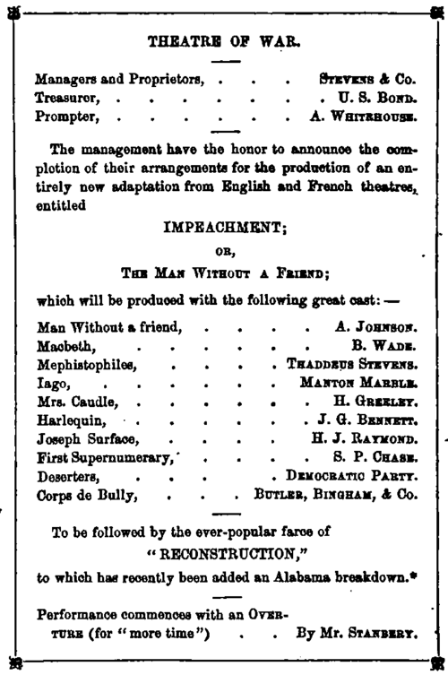

Explaining The Surprising Equanimity Of A Nation Under Complicated Misfortunes. Continued
Description
This section is from the book "Smoked Glass", by Orpheus C. Kerr. Also available from Amazon: Smoked Glass.
Explaining The Surprising Equanimity Of A Nation Under Complicated Misfortunes. Continued
Discussing this and other great questions, I was walking down Pennsylvania Avenue with a solid Boston man yesterday, when we ran against a fellow-being who, with his back toward us, was attentively contemplating our national banner as it floated over a building near by. With arms folded, head thrown back, and the south-east corner of the Ten-of-Clubs accidentally protruding below the lining of his soft black hat, he reminded me somewhat of Hamlet, just prior to his little affair with Laertes; but, upon looking more closely, I recognized the Conservative Kentucky Chap.
" Well met, my ' Knight of the Golden Circle!' " cried I, introducing my friend; " what cheer ? "
" Hem! " says the Kentucky Chap, " the National Democratic Organization, of which Kentucky is the pride, knows nothing whatsoever about any golden circle except the 'Whiskey Ring.' "
Here the Conservative Kentucky Chap gazed again at the floating standard, and says he, -
" When I look upon that picture of Kentucky's starry sky, and remember that ten stars in the constellation are still kept in eclipse by the negro-suffrage despotism of New England, I feel as though the ten of diamonds had slipped out of the pack and left Kentucky to be euchred by New Hampshire."*
Here the solid Boston man breathed very hard, as though he had just arisen from his usual morning prayer to Dickens, and says he, -
" Did you speak to me, Rebel ? "
The Kentucky Chap scowled such an intense frown of assent that the four of clubs worked down out of his hat to the brow of his left eye, and gave him the appearance of being under treatment for ophthalmia.
" That flag is for every American freeman! " says the solid Boston man, "and is favorably mentioned in the works of Dr. Holmes as such. Next to the Hoosac Tunnel and Ticknor & Fields' new bookshop, it is dearer to every loyal bosom, whether white or black, than all else in the wide world. And shall its stars shine for the white Rebel while the sable loyalist is forgotten? Forbid it, Bunker Hill! I tell you," exclaimed the solid Boston man, growing purple in the face, " that Massachusetts has at length decided to raise the free-negro race to their birthright under the national stars, even though it should be necessary to trust that flag entirely to black guards ! "
He meant it honestly, my boy; he almost cried under his keen sense of the magnanimous intention of Massachusetts ; but upon catching the intensely cocked eye of the Conservative Kentucky Chap, I coughed in a manner quite unfamiliar to our highest-priced physicians; and slapped
* New Hampshire had just elected. a Republican State ticket.
Kentucky's favorite son so severely upon the back, to save him from inexplicable choking, that a small black case-bottle and three court-cards shot out of his forward vestments like meteors from a cloud.
Fain would this friendly pen pursue the theme, were it not for a card inscribed as follows:
Impeachment Matinee
Dress Circle
Gentleman and Lady.
Season Ticket
(Forney Print.) (Show to Usher.)
This ticket lies here upon my desk; and below it is a smaller one, answering to the between-acts "check" of other theatres, and intended for use at the door when you desire to leave for a few moments. It is inscribed, simply, Ticket of Leave.
And admits the bearer to the theatre again, after he shall have procured the glass of water and eaten the clove, to lunch upon which he went out.
Promptly, at one o'clock, on two days of this week, I used the first of the above tickets, and had the pleasure of escorting a fashionable maiden, of imperceptible bonnet, to one of the best seats in the house. Let this agile pen move slowly, my boy; and this ink, which is of the color of the freed-negro race, flow gently, while I recall the scene that burst upon my vision and must have broken many pairs of spectacles. After seating the maiden, and giving her half an hour to complete that pulling of skirts with which the bell-shaped women of America are wont to soothe the nerves of all beholders at church and the opera, I pulled out my piece of Smoked Glass, and began my survey of a national pageant which were over-dazzling to eyes not thus protected. Two injuriously lustrous planets at once saluted my startled gaze, fixed in line, on an apparent firmament of deep blue; but before I could express the opinion that I must be going mad, or that something seriously astronomical must be the matter with my orbs, the shining twain resolved themselves into two gorgeous brass buttons upon the cerulean dress-coat of a military being who had affably taken a standing position right in front of my Smoked Glass.
"Excuse me, sir," said I, with bitter sarcasm; "but, as you have not a pane in your stomach, I cannot see through you".
" Ah ! " said a familiar voice, " if I'd thought of that, my fren', I'd have worn my sash".
Directing my Smoked Glass to his face, which was now turned toward me, I recognized Captain Villiam Brown; who, with his own bit of glass, had been engagingly observing the innumerable organdy and grenadine maidens in the dress-circle.
"Ha, my Lord Cardigan," said I, after excusing myself to the lady in my own care, and moving away with the Mackerel hero, " do you come here to study the Black Crook which our national affairs seem to have taken, or are you present rather as an indifferent spectator of the White Forney?"*
" My fren'," says Villiam, taking a handful of peanuts from one of his pockets and giving me half, " I come to the High Court of Impeachment to examine the fashions, and see whether bonnets have got low enough yet to make it safe to enter into the 5-20 bonds of wedlock".
" I don't know about the bonnets," said I, calmly; "for my Smoked Glass does not magnify enough to reveal them to me. But this season's dresses are certainly low enough --- in the neck".
" Ah! " says Villiam, severely; " the dresses of some of these fair beings are so low, that they are virtually a take-off of everything our mothers used to wear. Hum !" says Villiam, anxiously, " some of them will take cold in this changeable weather if they don't put on more fans".
Thus speaking, he left me, and I hastened to the grenadine of my choice, carrying thither one of the programmes, reading thus, -
* The "Black Crook" and the " White Fawn" were two spectacular ballets of the most meretricious " French school," which had, successively, occupied the stage of the metropolitan play-house far nearly two years, and rendered the latter eligible for the title of moral plague-house.
* By popular vote, unreconstructed Alabama had recently rejected the Constitution which would have restored her to representation in Congress.
As I looked down from the dress-circle into the pit during the opening scenes, and brought my bit of Smoked Glass to bear upon one after another of the great actors, there came upon me an unseemly disposition to mislead the intellect of the innocent being at my side, and encourage her to believe that the scene then "on" was intended to represent a fashionable dining-saloon.
"Why," she whispered, "does that fine-looking creature, at the top table, rap so?"
It was the Chief Justice rapping for order, but I told her that he was knocking for a waiter to come and take his order.
Was this wrong, my boy ? Did I thereby cast ridicule upon the majestic judicial proceedings of the United States of America, and fill the subtle mind of woman with mistaken imaginings ? Perhaps so, my Pythias; perhaps so; but she thought that first scene was laid in an eating-house, and kept wondering why the tables of the Counsel and Managers were not furnished at least with some representative of Ham.
Speaking of the latter, X was conversing last evening with the former chaplain of the Mackerel Brigade, concerning the President's line of defence; and suggested to him, that, inasmuch as Mr. Johnson is a tailor by profession, and therefore, according to popular belief, only one-ninth of a man, it was palpably unfair for the Senate to be his jury.
" How so ? " asked the chaplain.
" Why," said I; " can there be any fairness in pitting a one-ninth-er against so many Se'n-a-tors ? "
" Young man," quoth the Mackerel Chaplain, abstractedly; "the judgment of Heaven has fallen upon the President because of his recreancy to the hapless children of Ham, whose Moses he had promised to be. A black hand stretched to Deity in a prayer for merited retribution may be stronger than the white hand that invokes a blessing undeserved".
How true that is, my boy, especially when you remember of what little account has been that blessing once invoked for yourself by the hand of your father! A. Johnson is doomed. Off with his head! So much for bucking Ham!
Yours, Shakespeareanly,
Orpheus C. Kerr.
Continue to:
- prev: Letter IV. Explaining The Surprising Equanimity Of A Nation Under Complicated Misfortunes
- Table of Contents
- next: Letter V. Introducing An Impecunious But Loyal Southern Cavalier